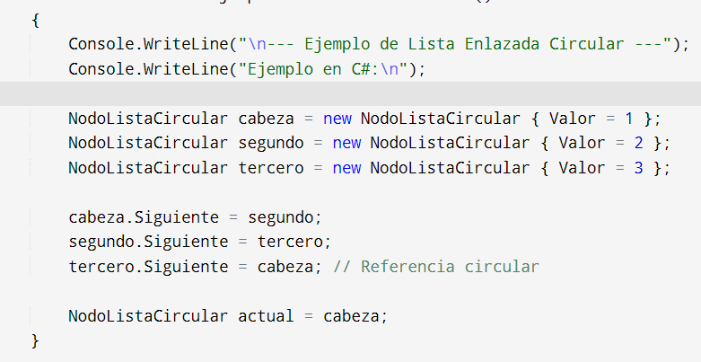

Concepto de lista enlazada circular
Una lista enlazada circular es una estructura de datos dinámica que consiste en una secuencia de nodos donde el último nodo está conectado de vuelta al primer nodo, formando así un ciclo cerrado. Este tipo de listas puede ser simplemente enlazada o doblemente enlazada, dependiendo de si cada nodo tiene una referencia solo al siguiente nodo o también al nodo anterior.
